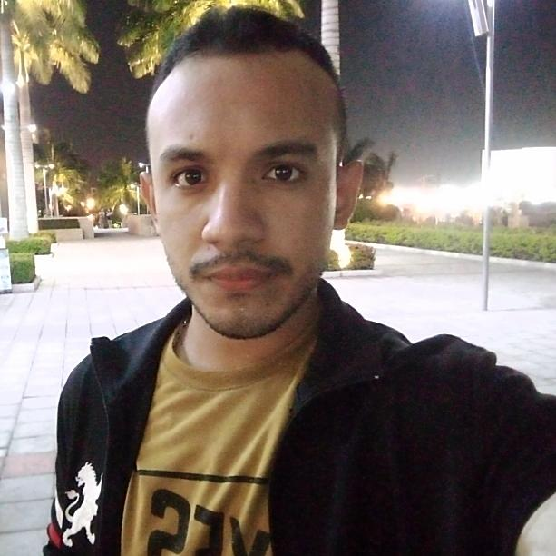

CEDEÑO SÁNCHEZ ECKERD GABRIEL
Duran-Recreo 5ta Etapa, Mz 550 V7
Teléfono: (+593) 990199147
Datos Generales
Fecha de nacimiento: 07/02/1999
Cédula: 095815694-5
E-mail: eckerdgabriel@gmail.com
Formación Académica
Bachiller: Unidad Educativa 4 de Noviembre
Ingenieria en TI: Universidad Laica Eloy Alfaro de Manabí
Soporte Técnico: Disniko S.A
Inglés Básico: Unidad Educativa 4 de Noviembre
Experiencia Laboral
Asistente: Comercial Hilda Rosa
Cursos y Formaciones
Curso de Programacion inicial Python (2018) en edx.org
Curso de redes informáticas (2020) en udla.edu.ec